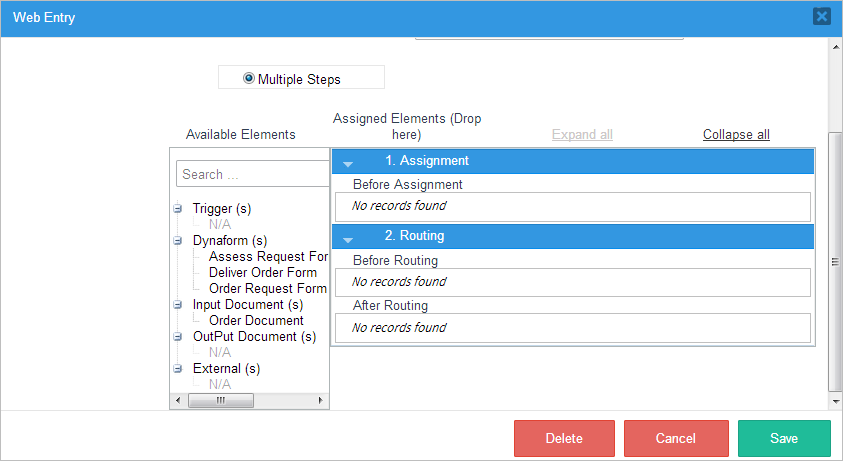
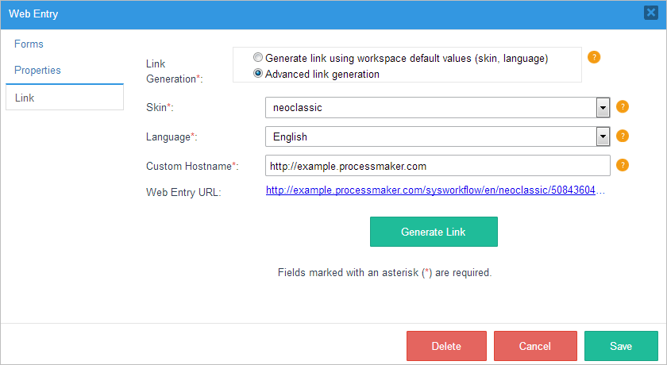

| Improved Feature: The feature described in this page is available as of ProcessMaker 3.2.2. |
Overview
Web Entry allows anonymous, external users to initiate new cases from an external web page where logging into ProcessMaker is optional. Web Entry provides a web link of a Dynaform or Multiple Steps in the first task of a process. The user fills out this Dynaform or Multiple Steps and submits the data back to ProcessMaker. Web Entry can only be used to start cases.
Web Entry is useful when offering services directly to clients through your organization's web page. For instance, a school could use Web Entry to allow prospective students to apply by filling out a ProcessMaker Dynaform embedded in its web page. Likewise, a company could use Web Entry to provide its clients with an order form for its services.
Web Entry provides the "PHP pages with web services" option to generate an external web link to a Dynaform in the initial step of a process. This link can be used in an HTML <a href> tag in an external web page or can be embedded inside an external web page through HTML <frame> or <iframe> tags.
Before Using Web Entries
If you are using PHP 7 and a ProcessMaker version 2 process, you need to regenerate the Web Entry or create a new one in order to not have problems.
Warning: Avoid modifying auto-generated PHP files. It is bad practice to modify these files, because they will regenerate after saving the Web Entry configuration or when the Dynaform involved in the Web Entry is saved from Designer. Modified information will be lost.
Configuring a Web Entry
Since the Web Entry option is only available in empty start events,first drag and drop an empty start event onto the BPMN designer canvas. Then, right click on that start event and select Web Entry from the context menu that is displayed (see image below).

A new window will open containing three tabs; Forms, Properties and Link, as seen in the image below.

Each one of the fields in each tab has an orange icon with a question mark that displays the description of the field if clicked on by the user.
Forms
Single Dynaform: Choose this option to select only one Dynaform from the Dynaform dropdown. The user will be redirected to this specific Dynaform when accessing the Web Entry link.
Warning: ProcessMaker will deprecate Single Dynaform. The Single Dynaform will be one Dynaform in Multiple Steps.

Multiple Steps: Choose this option to add one or more steps to the Web Entry. A step can be a Dynaform, input document, output document, trigger, or an external step. The user will be redirected to the first step after accessing the Web Entry link, then to the second and so on.
The first tab, Forms, in the Web Entry window displays different options that configure which Dynaform(s) or steps can be accessed with the link. All the steps configured in this tab must be completed to initiate a new case.
Note: A case is created every time the multiple steps forms are used, those web entries that were not completed will remain as draft cases assigned to the Guest user.

Properties
The properties tab has the following fields:

- Web Entry Title: Enter a title to be displayed when the Web Entry's windows open.
Authentication: Select the method of authentication, which can be “Anonymous” or “Require user login”.
-
Anonymous: Select this option to create cases through the "Guest" user available in the ProcessMaker installation by default. In the Anonymous section, the User field will remain, but it will be marked as "read-only".
Note: If upgrading the ProcessMaker installation to PM 3.2.2 or creating a new ProcessMaker 3.2.2 installation, the Guest user will be automatically created with the role PM_GUEST_CASE, which only includes the permission to create cases. The Guest user cannot be edited or deleted by other users, even an Administrator user.
For old web entries modifications the ProcessMaker will change automatically the user by Guest, and a confirmation message is displayed when the Web Entry is saved.

- Require user login: Select this option to set a login page where any ProcessMaker user can log in to create a new case using the Web Entry link. Once this option is selected, the following three options will become available:
Hide Logged Information Bar: A section that contains information about the user logged in, such as the first name, last name and username, is added at the top of the window by default when the Web Entry link is accessed. The user information that is displayed is determined in the Display Information settings.

If this option is checked, the Web Entry step(s) will be rendered without this information bar.
-
- Callback Action: Select one of the following actions to happen after the steps assigned to the Web Entry are completed.
-
Redirect to ProcessMaker predefined response page: A confirmation message will be displayed after the last step is completed.

- Redirect to custom URL: Select this option to redirect the user to a custom URL after the steps of the Web Entry are completed. The URL where the user will be redirected can be set in the Custom URL field.
Redirect to custom URL and clear login info: Select this option to redirect the user to a custom URL and clear the user session after the steps of the Web Entry are completed.
Note: The SAML SSO's session is not cleared even if the Clear Login option in the SAML's Web Entry certificate overwrites this condition with its own priority.
-
Custom URL: A complete domain and port name where the user will be redirected to when the Web Entry is completed. Note that this field is only available if the callback action selected was Redirect to custom URL or Redirect to custom URL and clear login info.
A @=variable can be inserted in this field by clicking the @@ button. Note that the "http://" or "https://" prefix must be included in the variable's value, or when including the variable in the field, as shown in the image below.

- Show Task in New Case: Check this option so users who have been assigned to work on the task after the start event which was configured as a Web Entry can see this process in the list of processes of the New Case folder. If this option remains unchecked, the process won't be listed in the New Case folder.
Link
The options in the Link tab allow the user to configure the structure of the link that will be generated.

- Link Generation:
- Generate link using workspace default values (skin, language): Select this option to generate a link with the default skin, language and hostname.
- Advanced link generation: Select this option to customize the URL that will be generated.
- Skin: Select the skin that will be used when displaying the steps of the Web Entry. The Classic and Neoclassic skins are the default options.
- Language: Select a language.
- Custom Hostname: Set a hostname that is different to the one that your ProcessMaker server has. For example, if your ProcessMaker URL looks like this: http://192.168.17.45/, and the custom hostname is set to "example.processmaker.com", the URL will change to:
http://example.processmaker.com/sysworkflow/en/neoclassic/62238512456f1d1505aa403006045594/29116141356f1d15082ae94059299669.php
This field validates URLs with the following formats:- Protocol + IP + Port
- Protocol + Domain name + Port
- Web Entry URL: The URL of the Web Entry that is generated when the Generate Link button is clicked.
Finally, at the bottom of the Web Entry window, there are three buttons.
Delete: Erases the URL created and clears the Web Entry configuration. A message will be displayed to confirm the action.

Click on the Yes button, a quick message will appear confirming that the URL was successfully erased from the Web Entry window and from the start event.

Save: Saves the configuration if all the fields are correctly filled in. Otherwise, a message will be displayed indicating which fields need to be corrected or filled in.
- Cancel: Cancel the operation and closes the window.
Accessing the Link
Copy the URL generated inside the Web Entry URL field, and copy the URL into another tab to be redirected to the Web Entry form. In this example, the “Require user login” option was selected, so the user must type in his/her credentials to access the Web Entry form. Also, the skin chosen was “neoclassic”.

If the skin selected was "classic", the login interface would look like this:

Once the user logs in, the user’s information won't be displayed at the top of the Dynaform if the Hide Logged Information Bar box was checked.

If it wasn't checked, the user information bar will be displayed at the top of the Dynaform.

Fill in the form with the information requested and submit the form. In this example, the selected callback action was "Redirect to custom URL", and the custom URL was set to "http://www.processmaker.com"; therefore, once the form is submitted, the user will be redirected to the ProcessMaker web page.

Web Entry Cases Status
Web Entry cases can be differentiated if the Web Entry has a single Dynaform or multiple steps. Based on this, the Web Entry cases status can be:
- For a Web Entry with a single Dynaform:
- If the Web Entry link starts the case but the case is not submitted, there is no status.
- After submitting the form, there is no status.
- After routing the case, the status is To Do.
- For a Web Entry with multiple steps:
- If the Web Entry link starts the case but the case is not submitted, the status is Draft.
- After submitting the form, the status is Draft.
- After routing the case, the status is To Do.
Inserting Web Entries into Web Pages
The easiest way to insert a Web Entry form into an external web page is to simply add a link (anchor) to the Web Entry form in the web page.
For example, a web entry generated with the "PHP Pages with Web Services" option has the link:
Then, a link to the Web Entry form could be added to a web page:
To link to the same Web Entry form by clicking on an image
A Web Entry form can be embedded inside an existing web page through the use of HTML frames
For example, the same web entry form can be embedded in a HTML frameset like this:
<head>
</head>
<frameset border="0" frameborder="0" framespacing="0" rows="20%,*">
<frame src="title.html">
<frameset border="0" frameborder="0" framespacing="0" cols="30%,*">
<frame src="menu.html">
<frame src="http://acme.com/sysworkflow/en/neoclassic/8061532405176da5242da84006421863/My_DynaForm_1.php">
</frameset>
</html>
Likewise, the same web entry form could be embedded in an <iframe>.
<head>
</head>
</body>
<p><img src="acmelogo.png"><big>Acme title text</big></p>
<iframe src="http://acme.com/sysworkflow/en/neoclassic/8061532405176da5242da84006421863/My_DynaForm_1.php" width="100%" height="800">
<p>No iframe support, so click on the
<a href="http://acme.com/sysworkflow/en/neoclassic/8061532405176da5242da84006421863/My_DynaForm_1.php">Application Form Link</a></p>
</iframe>
<p>Acme footer text</p>
</body>
</html>
If the Web Entry form was generated with the Single HTML option, then it just generates the HTML code. Paste that code into an HTML file and save the file in a public place in the web server, so it can be used as the src for the frame.
Structure of the Web Entry Tables
The wf_<workspace>.WEB_ENTRY and wf_<workspace>.WEB_ENTRY_EVENT tables provide handy information about Web Entries, which can be useful to consult in SQL queries.
Web Entry Table
| Field Name | Type | Source Table | Description |
|---|---|---|---|
| WE_UID | varchar(32) | WEB_ENTRY | Web Entry unique ID. |
| PRO_UID | varchar(32) | PROCESS | UID of the process where the web entry was configured. |
| TAS_UID | varchar(32) | WEB_ENTRY | Web Entry Multistep Task UID. |
| DYN_UID | varchar(32) | DYNAFORM | The UID of the Dynaform that was assigned in the Web Entry configuration. This field is required if the WE_TYPE parameter is "SINGLE", or if it was not defined. |
| USR_UID | varchar(32) | USERS | User UID. This field is required if the WE_AUTHENTICATION parameter is "ANONYMOUS" or it is not defined. |
| WE_METHOD | varchar(4) | WEB_ENTRY | The method of publishing the Web Entry, which is no longer used in ProcessMaker 3.x and is always set to “HTML”. |
| WE_INPUT_DOCUMENT_ACCESS | integer | WEB_ENTRY | Determines whether the external user can upload input documents with no restriction. This parameter is no longer used in ProcessMaker 3.x and is always set to 1. |
| WE_DATA | mediumtext | WEB_ENTRY | The PHP file generated when the Web Entry is created. |
| WE_CREATE_USR_UID | varchar(32) | WEB_ENTRY | The ID of the user who created the Web Entry. |
| WE_UPDATE_USR_UID | varchar(32) | WEB_ENTRY | The ID of the user who updated the Web Entry. |
| WE_CREATE_DATE | datetime | WEB_ENTRY | When the Web Entry was created. |
| WE_UPDATE_DATE | datetime | WEB_ENTRY | Last time the Web Entry was updated. |
| WE_TYPE | varchar(8) | WEB_ENTRY | The type of the Web Entry, which can be SINGLE or MULTIPLE. The value is 'SINGLE' by default. |
| WE_CUSTOM_TITLE | mediumtext | WEB_ENTRY | The custom title of the Web Entry. This title will be displayed in the browser toolbar. |
| WE_AUTHENTICATION | varchar(14) | WEB_ENTRY | The authentication type, which can ANONYMOUS or LOGIN_REQUIRED. Defined as 'ANONYMOUS' by default. |
| WE_HIDE_INFORMATION_BAR | integer | WEB_ENTRY | If set to 1, the logged information bar will be hidden. If set to 0, the logged information bar will be displayed. |
| WE_CALLBACK | varchar(13) | WEB_ENTRY | The callback action type, which can be PROCESSMAKER, CUSTOM or CUSTOM_CLEAR. It is set to 'PROCESSMAKER' by default. |
| WE_CALLBACK_URL | mediumtext | WEB_ENTRY | Callback custom URL. This parameter is required, when the WE_CALLBACK parameter is set to "CUSTOM" or "CUSTOM_CLEAR". |
| WE_LINK_GENERATION | varchar(8) | WEB_ENTRY | Link generation type, which can be DEFAULT or ADVANCED. Set to 'DEFAULT' by default. |
| WE_LINK_SKIN | varchar(255) | WEB_ENTRY | The skin selected. |
| WE_LINK_LANGUAGE | varchar(255) | WEB_ENTRY | The language selected. |
| WE_LINK_DOMAIN | mediumtext | WEB_ENTRY | The custom domain to be included in the Web Entry URL. |
WEB_ENTRY_EVENT Table
| Field Name | Type | Source Table | Description |
|---|---|---|---|
| WEE_UID | varchar(32) | WEB_ENTRY_EVENT | Web Entry Event unique UID. |
| WEE_TITLE | MEDIUMTEXT | WEB_ENTRY_EVENT | The WEE_TITLE value is the same as the EVN_UID parameter. This parameter was preserved to maintain compatibility with Web Entry v.1. It is a required field. |
| WEE_DESCRIPTION | MEDIUMTEXT | WEB_ENTRY_EVENT | Web Entry description, which is no longer used in ProcessMaker 3.x. This field was preserved to maintain compatibility with Web Entry v.1. |
| PRJ_UID | varchar(32) | PROCESS | UID of the process where the Web Entry was configured. |
| EVN_UID | varchar(32) | BPMN_EVENT | UID of the start event where the Web Entry was configured. |
| ACT_UID | varchar(32) | BPMN_ACTIVITY | UID of the task connected to the start event that has the Web Entry configured. |
| DYN_UID | varchar(32) | DYNAFORM | The UID of the Dynaform that was assigned in the Web Entry configuration. This field is required if the WE_TYPE paramater is "SINGLE", or if it was not defined. |
| USR_UID | varchar(32) | USERS | User UID. This field is required if the WE_AUTHENTICATION parameter is "ANONYMOUS", or if it is not defined. |
| WEE_STATUS | varchar(10) | WEB_ENTRY_EVENT | Restricts access to the endpoint. This field is no longer used in ProcessMaker 3.x and is set to "ENABLED" by default. |
| WEE_WE_UID | varchar(32) | WEB_ENTRY | Web Entry unique UID, Same value as the WE_UID of the WEB_ENTRY table. |
| WEE_WE_TAS_UID | varchar(32) | WEB_ENTRY | Web Entry unique UID. Same value as the WE_UID field of the WEB_ENTRY table. |
| WEE_WE_TAS_UID | varchar(32) | WEB_ENTRY | Web Entry Multistep Task UID. Same value as the TASK_UID field of the WEB_ENTRY table. |
Web Entry Endpoints
The current methods implemented for web entries in the ProcessMaker API designer are listed below:
Web Entry Event Endpoints Parameters
| Parameter | Type | Description | Example |
|---|---|---|---|
| wee_uid | String | Web Entry event unique ID. | "19169254159419706354fe5002102227" |
| evn_uid | String | UID of the start event where the Web Entry was configured. | "74894528559419221e65a75073105226" |
| act_uid | String | UID of the task connected to the start event where the Web Entry was configured. | "6903818925941922198e0c5064781608" |
| dyn_uid | String | The UID of the Dynaform that was assigned in the Web Entry configuration. This field is required if the WE_TYPE parameter is "SINGLE", or if it was not defined. | "87858147456f1d241d24cf9094878958" |
| usr_uid | String | User UID. This field is required if the WE_AUTHENTICATION parameter is "ANONYMOUS" or if it is not defined. | "13321060859402074ab54e8063681462" |
| wee_title | String | The wee_title value is the same as the evn_uid parameter. This parameter was preserved to maintain compatibility with Web Entry v.1. It is a required field. | "74894528559419221e65a75073105226" |
| wee_description | String | Web Entry description, which is no longer used in ProcessMaker 3.x. This field was preserved to maintain compatibility with Web Entry v.1. | " " |
| wee_status | Restricts access to the endpoint. This parameter is no longer used in ProcessMaker 3.x and is set to "ENABLED" by default. | "ENABLED" | |
| we_type | The type of Web Entry, which can be SINGLE or MULTIPLE. The value is "SINGLE" by default. | "SINGLE" | |
| we_custom_title | String | The custom title of the Web Entry. This title will be displayed in the browser toolbar. | "CUSTOM TITLE" |
| we_authentication | String | The authentication type, which can be ANONYMOUS or LOGIN_REQUIRED. Defined as "ANONYMOUS" by default. | "LOGIN_REQUIRED" |
| we_hide_information_bar | String | If set to 1, the logged information bar will be hidden. If set to 0, the logged information bar will be displayed. By default, this parameter is set to 1. | "0" |
| we_callback | String | The callback action type, which can be PROCESSMAKER, CUSTOM or CUSTOM_CLEAR. It is set to "PROCESSMAKER" by default. | "PROCESSMAKER" |
| we_callback_url | String | Callback custom URL. | "http://www.example.com" |
| we_link_generation | String | Link generation type, which can be DEFAULT or ADVANCED. Set to "DEFAULT" by default. | "DEFAULT" |
| we_link_skin | String | The ProcessMaker skin. | "classic" |
| we_link_language | String | Language. | "en" |
| we_link_domain | String | The custom domain to be included in the Web Entry URL. | "http://myowndomainname.local" |
| wee_url | String | The Web Entry link that was generated. | "http://example.processmaker.com/sysworkflow/en/ classic/62238512456f1d1505aa403006045594/ 74894528559419221e65a75073105226.php" |
| we_show_in_new_case | String | If set to 1, the process and initial task, which is the task that is connected to the start event configured as web entry, will be listed under the New Case folder. If set to 0, the process and initial task won't be listed. | "1" |
| tas_uid | String | Web Entry Multistep Task UID. | "wee-4528559419221e65a75073105226" |
Get Web Entries List
Gets the list of Web Entries in a specific process.
GET /api/1.0/{workspace}/project/{process_uid}/web-entry-events
Parameters:
-
Name Type Description workspace String Workspace name. process_uid String Process UID.
Result:
-
Type Description array Returns an array of objects containing data about each web entry.
Example:
Response
Content-Type: application/json
[
{
"wee_uid": "886442082594058b87ef217022155529",
"evn_uid": "29116141356f1d15082ae94059299669",
"act_uid": "88999176456f1d1506c97b4039603111",
"dyn_uid": "51283466256f1d1509b30c9017341867",
"usr_uid": "13321060859402074ab54e8063681462",
"wee_title": "29116141356f1d15082ae94059299669",
"wee_description": "",
"wee_status": "ENABLED",
"wee_url": "http://example.processmaker.com/sysworkflow/en/neoclassic/62238512456f1d1505aa403006045594/29116141356f1d15082ae94059299669.php",
"we_type": "MULTIPLE",
"we_custom_title": "Web Entry - Order Request",
"we_authentication": "LOGIN_REQUIRED",
"we_hide_information_bar": "1",
"we_callback": "CUSTOM",
"we_callback_url": "http://www.processmaker.com",
"we_link_generation": "ADVANCED",
"we_link_skin": "neoclassic",
"we_link_language": "en",
"we_link_domain": "example.processmaker.com",
"we_show_in_new_case": "1",
"tas_uid": "wee-6141356f1d15082ae94059299669"
}
{
...
}
]
Get a Web Entry
Gets information about a specific Web Entry.
GET /api/1.0/{workspace}/project/{process_uid}/web-entry-event/{wee_uid}
Parameters:
-
Name Type Description workspace String Workspace name. process_uid String Process UID wee_uid String Web Entry UID.
Result:
-
Type Description array Returns an array of objects containing data about the web entry.
Example:
Response
Content-Type: application/json
{
"wee_uid": "886442082594058b87ef217022155529",
"evn_uid": "29116141356f1d15082ae94059299669",
"act_uid": "88999176456f1d1506c97b4039603111",
"dyn_uid": "51283466256f1d1509b30c9017341867",
"usr_uid": "13321060859402074ab54e8063681462",
"wee_title": "29116141356f1d15082ae94059299669",
"wee_description": "",
"wee_status": "ENABLED",
"wee_url": "http://example.processmaker.com/sysworkflow/en/neoclassic/62238512456f1d1505aa403006045594/29116141356f1d15082ae94059299669.php",
"we_type": "MULTIPLE",
"we_custom_title": "Web Entry - Order Request",
"we_authentication": "LOGIN_REQUIRED",
"we_hide_information_bar": "1",
"we_callback": "CUSTOM",
"we_callback_url": "http://www.processmaker.com",
"we_link_generation": "ADVANCED",
"we_link_skin": "neoclassic",
"we_link_language": "en",
"we_link_domain": "example.processmaker.com",
"we_show_in_new_case": "1",
"tas_uid": "wee-6141356f1d15082ae94059299669"
}
Create a New Web Entry
Creates a Web Entry.
POST /api/1.0/{workspace}/project/{process_uid}/web-entry-event
Parameters:
-
Name Type Description workspace String Workspace name. process_uid String Process UID.
Required Fields for a Web Entry with a Single Dynaform and Anonymous User Authentication:
-
Name Type Description evn_uid String The UID of the start event where the Web Entry will be configured. act_uid String The UID of the task that is connected to the start event. wee_title String This value is the same as "evn_uid". This field was preserved to maintain compatibility with Web Entry v.1 dyn_uid String The unique UID that the web entry will display. usr_uid String User UID.
Example:
"evn_uid": "29116141356f1d15082ae94059299669",
"act_uid": "88999176456f1d1506c97b4039603111",
"dyn_uid": "51283466256f1d1509b30c9017341867",
"usr_uid": "13321060859402074ab54e8063681462",
"wee_title": "29116141356f1d15082ae94059299669"
}
Required Fields for a Web Entry with Multiple Steps and Anonymous User Authentication:
-
Name Type Description evn_uid String The UID of the start event where the Web Entry will be configured. act_uid String The UID of the task that is connected to the start event. wee_title String This value is the same as "evn_uid". This field was preserved to maintain compatibility with Web Entry v.1 we_type String The type of Web Entry, which must be set to "MULTIPLE" to create a web entry with multiple steps. usr_uid String User UID.
Example:
"evn_uid": "29116141356f1d15082ae94059299669",
"act_uid": "88999176456f1d1506c97b4039603111",
"wee_title": "29116141356f1d15082ae94059299669",
"usr_uid": "13321060859402074ab54e8063681462",
"we_type": "MULTIPLE"
}
Optional Fields:
See the parameter table to read more about the additional parameters.
Result:
-
Type Description array Returns an array of objects containing data about the Web Entry created.
Example:
Response
"wee_uid": "7344043645941958adfd3f7083976189",
"evn_uid": "29116141356f1d15082ae94059299669",
"act_uid": "88999176456f1d1506c97b4039603111",
"dyn_uid": "51283466256f1d1509b30c9017341867",
"usr_uid": "13321060859402074ab54e8063681462",
"wee_title": "29116141356f1d15082ae94059299669",
"wee_description": "",
"wee_status": "ENABLED",
"wee_url": "http://172.16.4.17/sysworkflow/en/neoclassic/62238512456f1d1505aa403006045594/29116141356f1d15082ae94059299669.php",
"we_type": "SINGLE",
"we_custom_title": null,
"we_authentication": "ANONYMOUS",
"we_hide_information_bar": "1",
"we_callback": "PROCESSMAKER",
"we_callback_url": null,
"we_link_generation": "DEFAULT",
"we_link_skin": null,
"we_link_language": null,
"we_link_domain": null,
"we_show_in_new_case": "1",
"tas_uid": "wee-6141356f1d15082ae94059299669"
}
Note: When a Web Entry is created with an anonymous user and multiple steps, the user Guest is automatically defined in the endpoint response.
Update a Web Entry
Updates a specified Web Entry.
PUT /api/1.0/{workspace}/project/{process_uid}/web-entry-event/{wee_uid}
URL Parameters:
-
Name Type Description workspace String Workspace name. process_uid String Process UID wee_uid String Web Entry UID
Required Parameters:
-
Name Type Description tas_uid String Task UID dyn_uid String Dynaform UID usr_uid String User UID we_title String Title we_method String Creation method = "WS" we_input_document_access String Input document access
Optional Fields:
-
Name Type Description we_description String Description we_data String Data
See the parameter table to read more about the additional parameters.
Result:
-
Type Description array Returns an array of objects containing data about each web entry.
Example:
Request
{
"usr_uid": "",
"we_authentication": "LOGIN_REQUIRED",
"we_type": "MULTIPLE"
}
Response
{
"wee_uid": "19169254159419706354fe5002102227",
"evn_uid": "74894528559419221e65a75073105226",
"act_uid": "6903818925941922198e0c5064781608",
"dyn_uid": "87858147456f1d241d24cf9094878958",
"usr_uid": "",
"wee_title": "74894528559419221e65a75073105226",
"wee_description": "",
"wee_status": "ENABLED",
"wee_url": "http://172.16.4.17/sysworkflow/en/neoclassic/62238512456f1d1505aa403006045594/74894528559419221e65a75073105226.php",
"we_type": "MULTIPLE",
"we_custom_title": "",
"we_authentication": "LOGIN_REQUIRED",
"we_hide_information_bar": "0",
"we_callback": "CUSTOM",
"we_callback_url": "http://www.processmaker.com",
"we_link_generation": "DEFAULT",
"we_link_skin": "classic",
"we_link_language": "en",
"we_link_domain": "example.processmaker.com",
"we_show_in_new_case": "1",
"tas_uid": "wee-4528559419221e65a75073105226"
}
Note: When a Web Entry is updated with an anonymous user and multiple steps, the user Guest is automatically defined in the endpoint response.
Delete a Web Entry
Removes a Web Entry from a start event.
DELETE /api/1.0/{workspace}/project/{process_uid}/web-entry-event/{wee_uid}
Parameters:
-
Name Type Description workspace String Workspace name. process_uid String Process UID wee_uid String Web Entry UID
Result:
-
Type Description array Returns an array containing the response.
Example:
Response
Content-Type: application/json
{
"success": true
}
Generate a Web Entry Link
Generates the web entry link.
GET /api/1.0/{workspace}/project/{process_uid}/web-entry-event/{wee_uid}/generate-link
Parameters:
-
Name Type Description workspace String Workspace name. process_uid String Process UID wee_uid String Web Entry UID
Result:
-
Type Description array Returns an array containing the Web Entry link.
Example:
Response
Content-Type: application/json
{
"link": "http://172.16.4.17/sysworkflow/en/neoclassic/62238512456f1d1505aa403006045594/29116141356f1d15082ae94059299669.php"
}
Get Languages of a Workspace
Gets the languages installed on a specific workspace. This endpoint has public access, which means that both users that are logged in and not logged in have access to the endpoint's information.
GET /api/1.0/{workspace}/system/languages
Parameters:
-
Name Type Description workspace String Workspace name.
Result:
-
Type Description array Returns an array of objects containing the languages installed on the specified workspace.
Example:
Response
Content-Type: application/json
{
"data": [
{
"LANG_ID": "en",
"LANG_NAME": "English"
}
{
...
}
]
}
Get Skins of a Workspace
Gets the skins of a specific workspace.
GET /api/1.0/{workspace}/system/skins
Parameters:
-
Name Type Description workspace String Workspace name.
Result:
-
Type Description array Returns an array of objects containing the skins of the specified workspace.
Example:
Response
Content-Type: application/json
{
"data": [
{
"SKIN_FOLDER_ID": "classic",
"SKIN_ID": "00000000000000000000000000000001",
"SKIN_NAME": "Classic",
"SKIN_DESCRIPTION": "Classic/default skin",
"SKIN_AUTHOR": "ProcessMaker Team",
"SKIN_VERSION": "1.0",
"SKIN_CREATEDATE": "2011-02-27",
"SKIN_MODIFIEDDATE": "2011-02-28",
"SKIN_WORKSPACE": "Global"
},
{
"SKIN_FOLDER_ID": "neoclassic",
"SKIN_ID": "00000000000000000000000000000002",
"SKIN_NAME": "neoclassic",
"SKIN_DESCRIPTION": "New default skin",
"SKIN_AUTHOR": "ProcessMaker Team",
"SKIN_VERSION": "1.0",
"SKIN_CREATEDATE": "2012-05-06",
"SKIN_MODIFIEDDATE": "2012-05-06",
"SKIN_WORKSPACE": "Global"
}
]
}